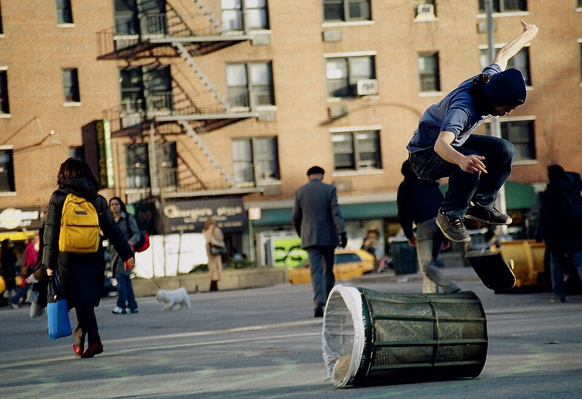
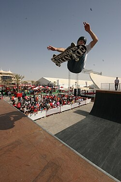

Modalidades
Street
No skate de rua (street), os praticantes utilizam a arquitetura da cidade, por exemplo bancos, escadas, corrimãos e a calçada (elementos do mobiliário urbano) como obstáculos para executar suas manobras e se expressar.[7][18] É com folga a modalidade mais difundida e popular do skate. O street é também a modalidade preferida de diversas tribos ou grupos de skatistas.

PARK
Modalidade do Skate praticada em pistas similares aos bowls e banks, porém geralmente maiores e apresentando diferentes niveis de profundidade, bem como, por vezes contendo corrimãos e outros obstaculos comuns ao Street.
FreeStyle
Modalidade onde o skatista apresenta vários movimentos em sequência, geralmente no chão.[7][18] O freestyle é considerado uma das primeiras modalidades do skate, na qual os esqueitistas fazem manobras de chão, em sequências com kickflip, 360 flip, inward heelflip, hardflip, sem obstáculos. onde o melhor skatista de freestyle foi Rodney Mullen
Vert ou Vertical
Half-Pipe
A modalidade vertical é praticada em uma pista com curvas (transições), com 3,40 m ou mais de altura, três metros de raio e quarenta centímetros de verticalização, geralmente possuem extensões. A pista, que apresenta a forma de U, é chamada de half-pipe e pode ser feita de madeira ou concreto.[7] O conceituado skatista Tony Hawk ficou famoso por suas grandes habilidades nos half-pipes. Tornou-se o que é graças à sua mãe, que comprava batatas fritas para ele sobreviver nos treinos da sua escolinha de skate, onde começou a praticar o esporte aos 3 anos de idade. Aos 6 anos, já tinha o patrocínio da Volcom, Vans, Element,entre outras. Nessa idade, já fazia flips e grinds pela cidade, onde se machucava muito. Um desses machucados, consequente de um flip "mal chutado", afastou-o do esporte durante um ano, pois ele quebrou sua perna direita e ralou todo o joelho esquerdo, o que demorou muito para curar.
